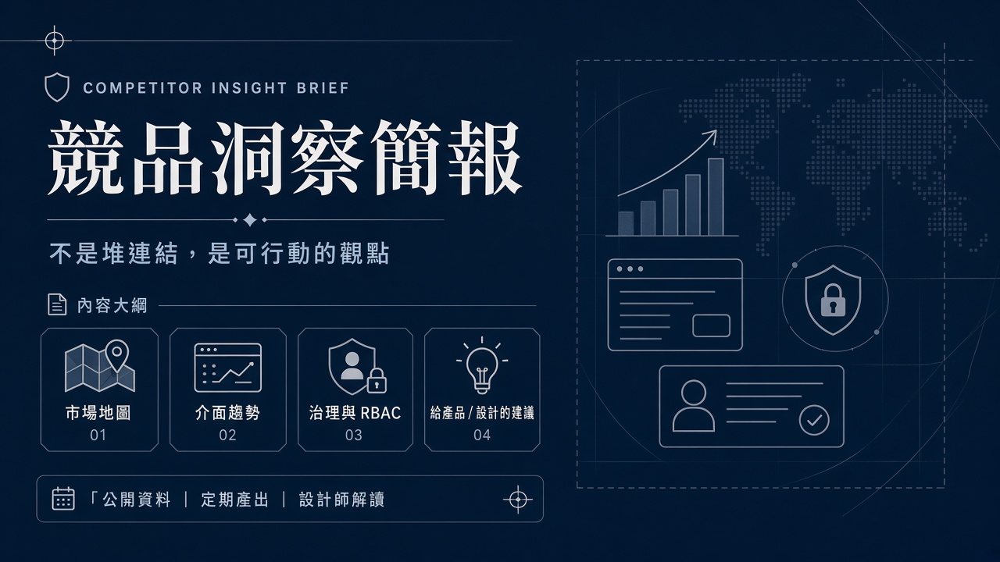
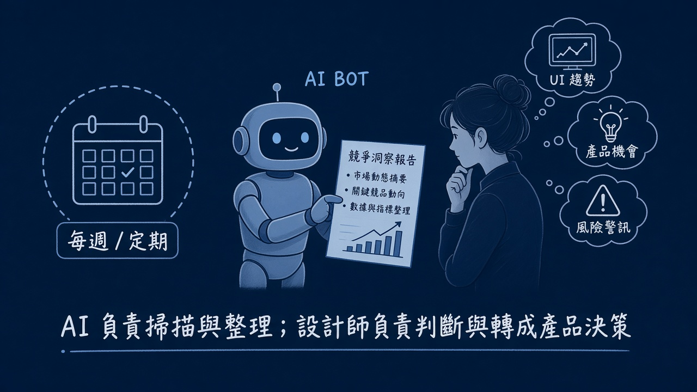

問題
競品定價、產品與招募頁面變化很快；靠偶爾手動逛官網，洞察容易斷層，也難累積可比較的觀點。
解法
設定 Competitor Watch：貼上競品公開 URL、排程定期巡檢，由 AI Bot 比對變化並整理成洞察簡報；我再以設計師視角解讀成產品機會與風險。
成果
建立「定期掃描 → 簡報 → 判斷」的節奏，讓產品洞察可持續，而不是一次性的競品作業。
- AI 負責掃描公開頁與整理差異；設計師負責判斷與轉成產品／體驗決策
- 簡報結構固定：市場地圖、介面趨勢、治理觀察、給產品／設計的建議
- 實際產出過企業 AI 後台／Agent 平台競品分析（公開資料、未登入客戶後台）
- 目標不是堆連結，而是保持對產品方向的敏銳度
視覺敘事


